Getting Started in Jerry's Colonies
Jerry's Colonies is a multiplayer-oriented addon for Minecraft: Bedrock Edition that adds player-managed colonies to the game. The goal is to turn Minecraft into a civilization simulator where players can manage/build cities, create lore, and simulate diplomacy.
The First Step:
You are well on your way to growing a powerful civilization, but first you need to set up the basics. Craft a flag using 6 wool and a stick. This is what will create your colony.
The flag is the first step of making all colonies, and later on you can place more flags to expand your colony!
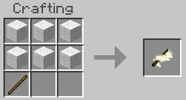
Placing Your Flag
Now you can place your flag! To do this, build a flag pole out of any vanilla fence and right click (mobile users: hold) to place the flag on the fence. If it doesn't work, your flag pole isn't tall enough, you are too far away, or you are not looking at the fence.
You will be asked to enable democracy, it's recommended you read the wiki page about it before enabling it. Learn about democracy mode here.
After placing the flag you should be given a crown named after your colony. This crown is unique and cannot be replaced — take good care of it.
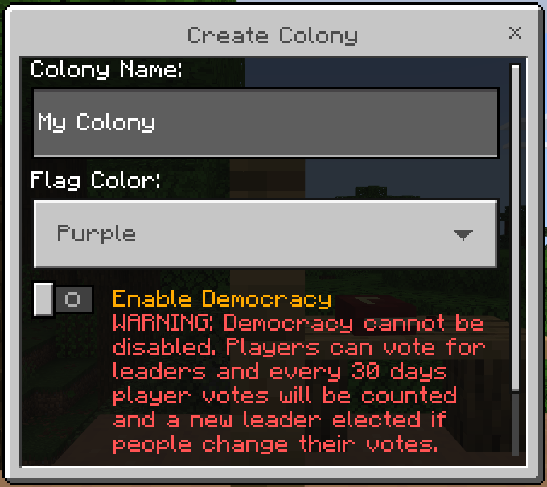
Mayor's Table
The Mayor's Table is the central workstation for your colony. Use a crafting table to make the Mayor's Table, the recipe is shown below.
Crafting Recipe
Combine these materials at a crafting table to create your Mayor's Table.
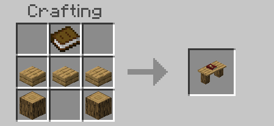
Mayor's Table Abilities
The Mayor's Table provides access to all colony management functions:
View Colony Info
— Sends a chat message containing info about your colony. Only you can see this.Change Flag Color
— Customize the flag color, and the color of your colonies display nameManage Members
— Invite players, Purchase Citizens, and Manage Population. You can also use this menu to assign player permissions, and custom ranks. Learn more about Player Ranks here.Diplomacy
— Set relationships with other colonies (ally/neutral/hostile), or declare war on your enemies.Rename / Delete Colony
— Change your colony's display name, or permanently delete a colony.Transfer Ownership
— Pass the crown to another player, transfers full ownership and administrative rights to them.Teleport Between Flags
— Fast-travel to any of your colony's flags (Only appears if your colony has multiple flags)
Interface Examples
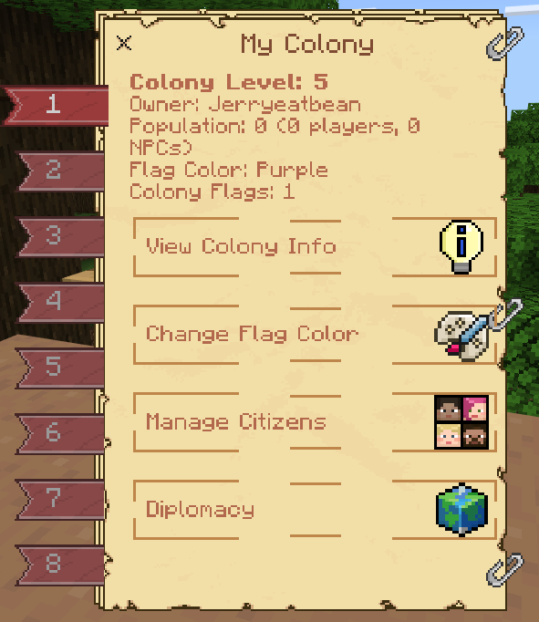
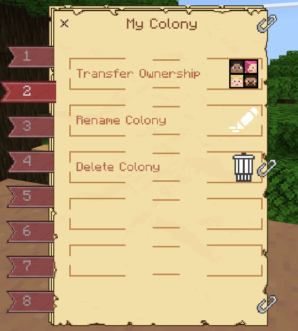
Feeding Citizens
It's important to learn how to feed your citizens before inviting citizens to your colony. Citizens need food to stay alive and productive. If a colony runs out of accessible food, citizens can become hungry and will eventually die.
Crafting & Setup
Craft a Food Crate by combining a chest with two bread and some planks at a crafting table — place the crate inside the colony territory so citizens can access it.
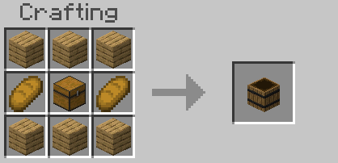
How it Works
Citizens will automatically take one food item from any accessible Food Crate per in-game day. The crate must be within the colony's protected radius.
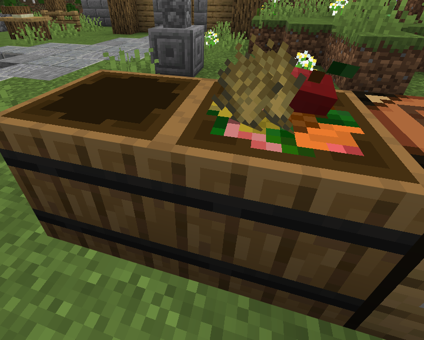
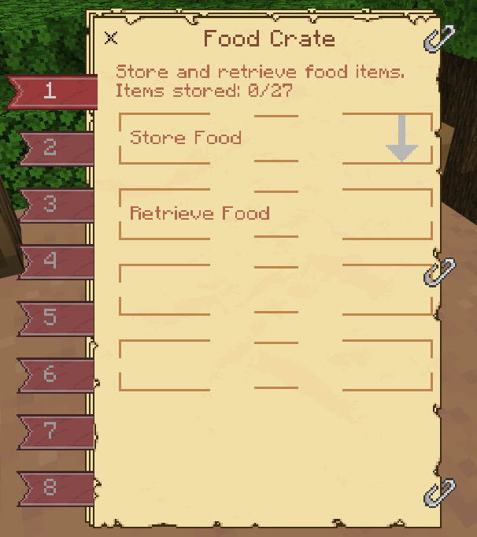
Citizens
Citizens are the heart of a colony. There are two kinds:
Types of Citizens
Players
Invite other players through the Mayor's Table to join your colony.
NPCs
Hireable citizens purchased from the Mayor's Table. Cost shown in the Mayors Table (Default 5 Emeralds Each), and they can be equipped with armor by dropping it at their feet and assigned jobs.
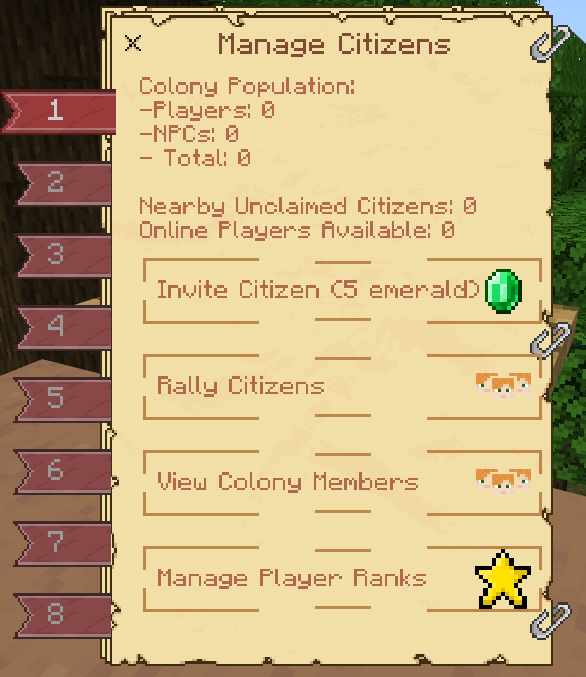
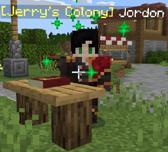
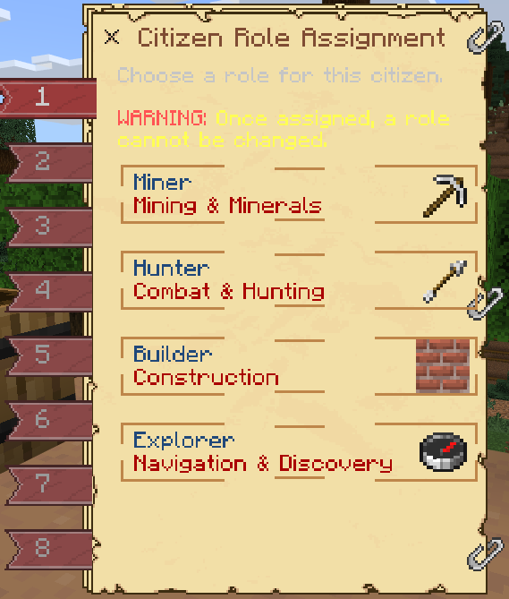
Feeding Citizens
Civilians require food to survive — see Feeding Citizens for more info. Check a citizens hunger by interacting with them.
Knights
Knights have been completely reworked — they are now separate from citizens. Learn more about the reimagined knights system on the Knights page.
Benefits & Mechanics
- Colony Buffs: Every 10 citizens unlocks a status effect for colony members within colony territory (up to 50 citizens worth of effects).
- Jobs: Assign jobs (botanist, miner, hunter, etc.). Citizens occasionally give items related to their job; a yellow exclamation mark appears above them when they have items to collect.
- Population Limits: Server admins can set NPC caps via the moderation tool, and adjust the price; be mindful of performance and balance when hiring many NPCs.
- Citizen Inventory Management: Crouch + Right Click / Tap and hold to manage the citizens inventory
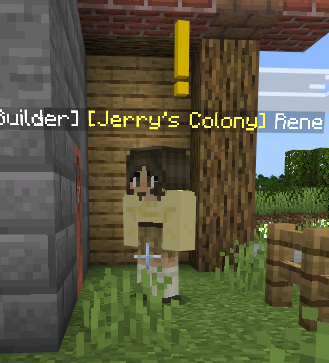
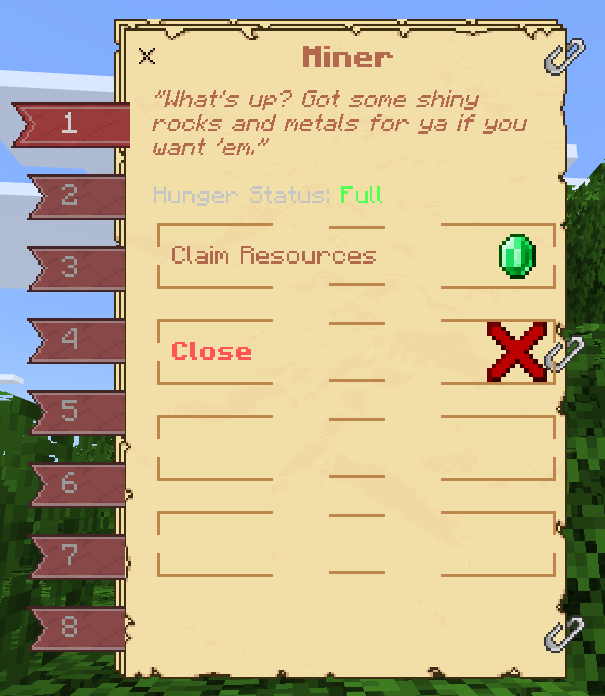
Knights
Knights have been completely reimagined! Now, knights are separate from citizens with new recruitment methods and advanced command capabilities.
Recruiting Knights
Knights are no longer a citizen job. Instead, you recruit them with iron ingots. Simply use iron ingots to hire knights for your colony.
The Commander Sword
Craft the new Commander Sword to take full control of your knights. This powerful item lets you manage and organize your military forces.
Commander Sword Abilities
- Stand Still / Follow: Right click a knight to make them stand still or follow you
- Create Units: Right click the Commander Sword elsewhere to divide knights into units
- Command Units: Command all knights in a unit at once
- Formations: Make knights stand in formations for organized military displays
Knights in Combat
Knights are now much more combat-focused and participate actively in wars and colony defense.
- War Participation: Knights now fight each other during wars
- Colony Defense: Knights will defend your colony from hostile mobs and enemy forces
- Formation Fighting: Use the Commander Sword to position knights strategically
- Equipment: Equip knights with better armor and weapons by dropping items at their feet
Archers
A new troop type has been added to Jerry's Colonies! Archers provide ranged support and are perfect for colony defense.
Creating Archers
Simply give a knight a bow, and it will become an archer. It's that easy!
Archer Capabilities
Archers are specialized ranged units with unique combat behavior:
- Ranged Attacks: Archers shoot arrows at enemies from a distance
- No Melee: Archers do not have melee attacks — they rely entirely on ranged combat
Best Practices
Get the most out of your archers with these tips:
- Mix Troops: Combine archers with knights for balanced offense and defense
- Strategic Placement: Position archers to cover entrances and vulnerable areas
The Arena
Enter the Arena and squad up with your colony to fight other colonies in a team deathmatch! This heavily focuses on improving and expanding the combat side of Jerry's Colonies.
How the Arena Works
The Arena allows colonies to participate in organized combat matches where players and their colony members fight against other colonies in team deathmatches.
- Team Deathmatch: Squad up with your colony and fight other colonies
- Spectate: Watch matches or participate in fights
- Seasonal Trophies: Earn new seasonal trophies each month without needing to update the addon
- Colony Pride: Represent your colony in organized combat events
The Arena Teleporter
Craft the Arena Teleporter to access the Arena. This special item allows you to spectate or participate in Arena fights.
Meet the Arena Princess
The Arena Princess is the overseer of all Arena matches. She manages the combat events and ensures fair competition between colonies.
Seasonal Trophies
Earn new seasonal trophies each month without needing to update the addon! The Arena features a rotating trophy system that keeps competition fresh.
- Monthly Rewards: New trophies available each month
- No Updates Required: Seasonal content updates automatically
- Competitive Play: Compete with other colonies for exclusive rewards
- Trophy Collection: Build your collection of Arena achievements
The Bounty Board
Set bounties on other players and earn rewards for taking them down! The Bounty Board adds a new layer of competition and conflict to Jerry's Colonies.
How Bounties Work
The Bounty Board allows players to set bounties on other players. Anyone who kills a player with a bounty will be rewarded with whatever the bounty setter chose.
- Set Bounties: Place a bounty on any player in the world
- Choose Rewards: Decide what reward the bounty hunter will receive
- Claim Bounties: Kill players with bounties to earn their rewards
- Public System: All players can see active bounties
Colony Ledger
The Colony Ledger (formerly known as Player ID) is your way to view all stats related to Jerry's Colonies. View colony rankings, player levels, and track your progress.
Colony Levels
Colonies can now level up through three primary activities:
(Colony Levels will become more useful in future updates)
- Having Citizens: Grow your population to increase colony experience
- Winning Wars: Victory in wars grants substantial colony experience
- Owning Flags: Multiple flags across the world contribute to your colony's level
Player Levels
Alongside colonies, individual players can now level up by killing other players during battle, but beware, dying causes you to lose personal points.
Rank Progression
There are 10 distinct ranks spanning 50 levels. Here's the complete progression path:
🎖️ Level 1-5: Recruit
Everyone starts here.
⚔️ Level 5-10: Soldier
🛡️ Level 10-15: Veteran
🎯 Level 15-20: Captain
⚡ Level 20-25: Warlord
👑 Level 25-30: Conqueror
🏛️ Level 30-35: Emperor
✨ Level 35-40: High Emperor
🌟 Level 40-45: Overlord
💎 Level 45-50: Titan
Player Ranks
Custom Colony Ranks
Ranks can be assigned to members of your colony via the citizen management menu of the mayors table. You can create up to 10 different ranks with different permissions.
Crowns
Crowns are the symbol of colony leadership in Jerry's Colonies. Each crown is unique to its colony.
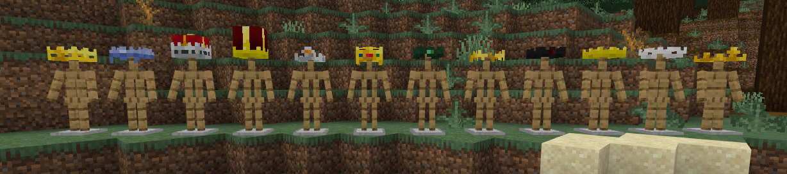
Flag Packs
Customize your colony with real-world and fictional flags! Flag Packs add a variety of new flag designs to enhance your roleplay and make each colony unique.
Real World Flags
36 real-world flags have been added that you can use for your colonies. Represent your nation or choose a flag that matches your colony's theme!
Fictional Flags
14 fictional flags have been added as well to enhance your roleplay. These unique designs let you create completely custom identities for your colonies.
Mysterious Merchants
Mysterious Merchants are special NPCs that sometimes spawn, selling unique and valuable items that can't be obtained elsewhere!
How Merchants Work
Mysterious Merchants spawn during the day and are slightly less common than witches. When you spot one, approach them to browse their special inventory.
Special Items for Sale
Mysterious Merchants offer three exclusive items:
🎺 Trumpet
A new musical item perfect for enhancing roleplay... or annoying people.
💍 Wedding Ring
An essential item for the new Marriage system. Use this to propose and merge colonies with another player.
💿 New Music Disc
A mysterious music disc that can only be obtained from Merchants. "The Arena"
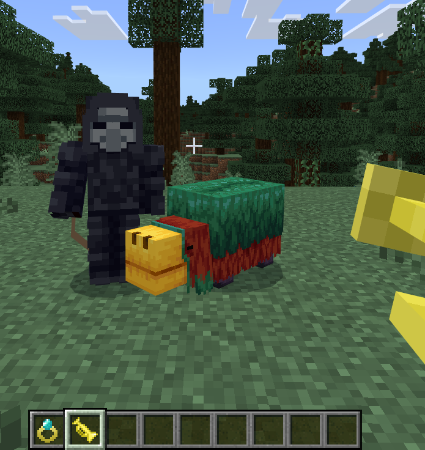
Democracy
Democracy is enabled when you create a colony, read this page to learn all about it.
How Democracy Works
When you create a colony, you have the option to enable democratic governance. In a democratic colony:
- Regular Elections: Leadership elections occur every 30 real-world days
- Member Voting: All colony members can vote for their preferred leader
- Fair Process: Votes must go through the new block, The Ballot Box
- No Going Back: You cannot disable Democracy
🗳️ The Ballot Box
The Ballot Box is a new block designed for democratic colonies.
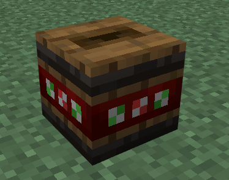
Using the Ballot Box
- Placement: Place Ballot Boxes in accessible locations within your colony
- Voting Period: At any point, members can interact with the Ballot Box to cast votes for the next election
- Vote Counting: The system automatically tallies votes and announces the winner
- Security: Each member can only vote for one player, but can change their vote at any time.
Democratic vs. Authoritarian
Choose your colony's governance style when creating it:
Democratic Colony
- Regular elections every 30 days
- Members vote for leadership
- Power can change hands
- Promotes engagement
Traditional Colony
- Original founder remains leader
- Leadership only changes via transfer
- Stable long-term governance
- Classic colony management
Marriage
Two players can now merge colonies through marriage.
How Marriage Works
Marriage is a special system that allows two players to unite their colonies:
- Obtain a Wedding Ring: Purchase a Wedding Ring from a Mysterious Merchant
- Propose: Right-click another player while holding the Wedding Ring to propose
- Merge Colonies: When accepted, the two colonies merge into one (Highest level colony absorbs smaller colony)
- One Marriage: Each player can only be married to one other player at a time (Right click spouse to divorce)
Taxation Table
Tax your player citizens to earn income for your colony. The Taxation Table allows you to set up regular income cycles to fund your colony's growth and development.
How Taxation Works
The Taxation Table enables you to collect taxes from player citizens in your colony. This provides a steady income stream that can be used for colony development, purchasing citizens, and buying blueprints.
Tax Cycles
Choose from three different taxation cycles to suit your colony's needs:
- Weekly: Collect taxes every 7 real-world days - fastest income but smaller amounts
- Bi-Weekly: Collect taxes every 14 real-world days - balanced approach
- Monthly: Collect taxes every 30 real-world days - largest income but longest wait
Setting Up Taxation
- Craft the Table: Create a Taxation Table using the appropriate crafting recipe
- Choose Cycle: Select weekly, bi-weekly, or monthly taxation
- Set Rates: Configure how much each player citizen will be taxed
- Collect Income: Return to the table when taxes are due to collect your colony's income
✉️ Mailboxes
Send items and letters to other mailboxes across the world. Mailboxes provide a postal service system that connects colonies and players regardless of distance.
How Mailboxes Work
Mailboxes allow you to send items, letters, and messages to other mailboxes placed anywhere in the world. This creates a postal network that enables long-distance communication and trade between colonies.
Delivery System
The delivery time for your mail depends on the distance between the sending and receiving mailboxes:
- Local Delivery: Nearby mailboxes receive mail quickly
- Regional Delivery: Medium distances have moderate delivery times
- Long Distance: Far-away mailboxes take longer to receive deliveries
Using Mailboxes
- Craft & Place: Create a mailbox and place it in your colony or desired location
- Send Items: Open the mailbox interface to send items to other mailboxes
- Address System: Target specific mailboxes by their location or owner
- Receive Mail: Check your mailbox regularly for incoming deliveries
- Letters: Send written messages along with or instead of items
War & Diplomacy
Diplomacy is how colonies manage their relationships with one another — set allies, neutrals, or hostiles and use the Mayor's Table relations menu to interact with other colonies.
Relations
Open the Relations menu at the Mayor's Table to view other colonies, set alliances, or mark another colony as hostile.
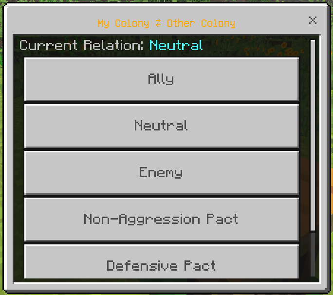
Declaring War
To declare war, use the diplomacy menu and choose Declare War against a hostile colony. When a war is declared, the target colony receives a notification and a war timer starts.
Wars are timed events where the duration is chosen by the declaring colony. Score points in a war by eliminating opposing NPCs or player citizens. Victorious colonies may claim one of the other colony's flags (if they have more than one).
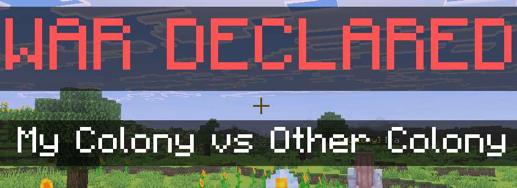
War Mechanics
- Timer System: Wars have a set duration chosen by the declaring colony
- Scoring: Gain points by eliminating enemy NPCs and player citizens
- Victory Rewards: Winners can claim flags from defeated colonies (if they have multiple flags)
- Level-Based: War declaration requirements based on colony level
Blueprints & Construction
Blueprints let you instantly place complex structures so you can quickly expand your colony with nice buildings and layouts.
🏗️ Blueprint Workbench
The Blueprint Workbench is the new dedicated home for buying blueprints! This specialized workstation works exactly the same as the construction menu from the Mayor's Table, but provides a focused interface just for blueprint management.
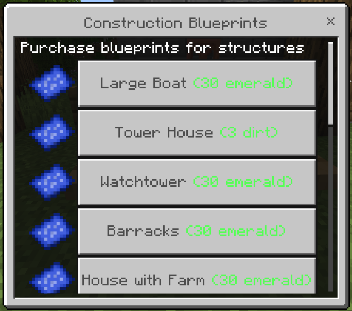
Crafting the Blueprint Workbench
Craft your own Blueprint Workbench to access the construction system independently of the Mayor's Table. This allows for more organized colony management and easier access to building tools.
Placing a Blueprint
Select a blueprint, position the preview outline in the world, and confirm to build. You have a short preview window to cancel the placement. If you don't like where it is, you have one more chance to undo it.
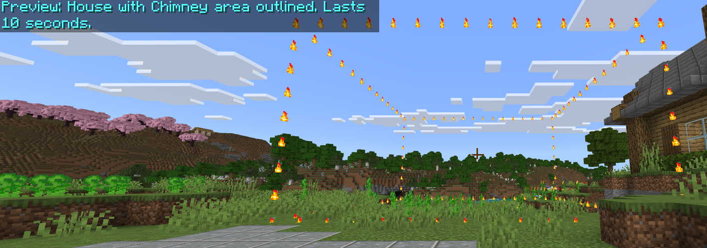
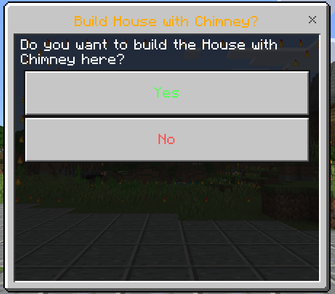
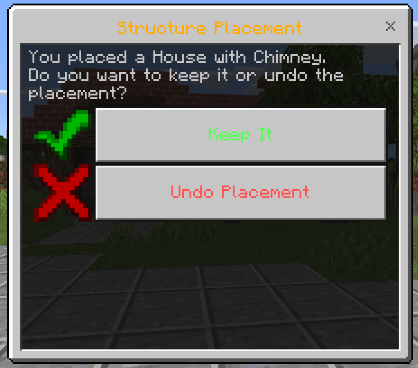
Example City
Here's a city built using several different blueprints to demonstrate the potential of combining multiple structures:
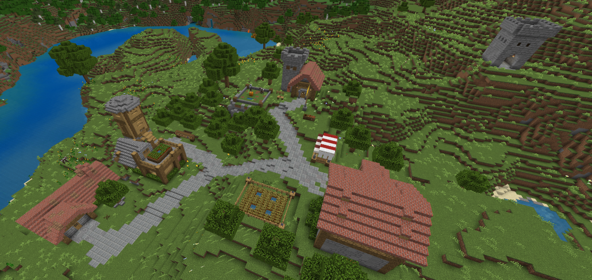
Desert Structure Pack
New structures specifically tailored for the desert have been added! These blueprints are perfect for colonies built in desert biomes.
- Desert Themed: Structures designed to fit perfectly in desert biomes
- Multiple Buildings: Various structures to create complete desert colonies
- Unique Style: Architecture that matches the desert aesthetic
Marauder Attacks
Marauders are very dangerous events where hostile NPCs arrive by hot-air balloon and assault your colony — first from the air, then on the ground.
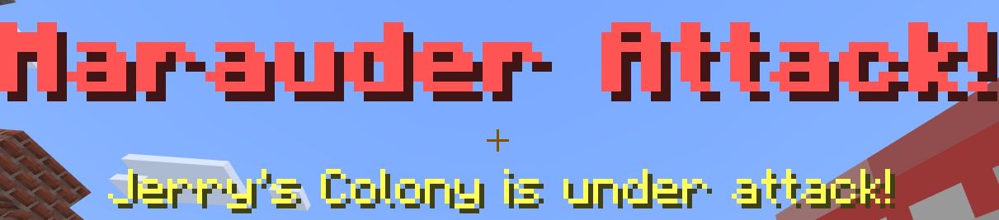
What are Marauders?
Marauders are hostile NPC raiders that spawn above colonies in small groups (commonly 3–5). They arrive in hot-air balloons and may target your colony for a raid that comes in multiple waves.
Attack Waves
Marauder attacks typically happen in two distinct phases:
Wave 1 — Aerial Bombing
Marauders remain in their balloons and drop explosive bombs over the colony. Bombs damage entities but do not break blocks.
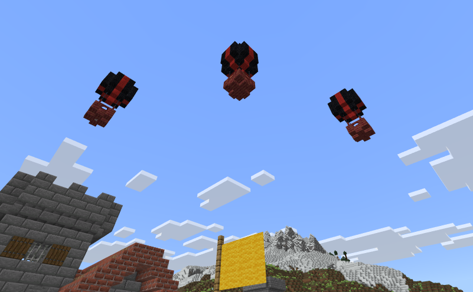
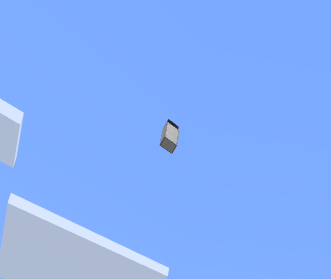
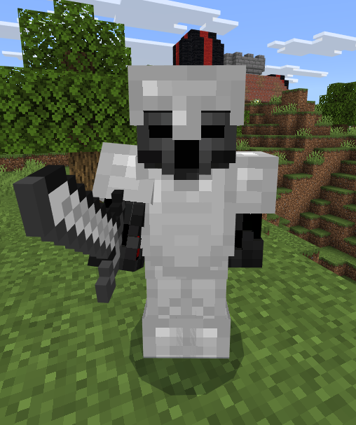
Wave 2 — Ground Assault
After bombing, the marauders land and continue the attack on the ground, engaging players and NPC citizens directly in melee combat.
Defense Strategies
- Shelter Citizens: Keep citizens sheltered inside protected structures during raids to reduce civilian casualties
- Equip Knights: Equip knights and guards with good armor and weapons — they perform well defending against the ground wave
- Iron Golems: Use Iron Golems for defense — they deal heavy damage to Marauders, but Marauders deal heavy damage back
- Admin Settings: Admins can change the frequency via the moderation tool if raids are too frequent or too rare
🚩 Totem of Peace
The Totem of Peace is a powerful new defensive item that can provide temporary protection from marauder attacks.
How to Obtain
Totems of Peace are dropped by defeated marauders during attacks. Successfully defending your colony against a marauder raid may reward you with this valuable protection item.
Protection Effect
When activated, the Totem of Peace prevents marauder attacks on your colony for 3 real-world days. This gives you time to rebuild, restock supplies, and strengthen your defenses.
Strategic Usage
- Post-Attack Recovery: Use after a devastating attack to rebuild safely
- Planned Expansion: Activate before major construction projects
- Resource Collection: Ensure safe gathering of materials outside colony walls
- Diplomatic Events: Secure peace during important negotiations with other colonies
Plagues
Plagues can infect a colony, applying Weakness III to citizens for 20 minutes. World admins can adjust how often plagues occur.
What are Plagues?
Plagues are random events that can strike your colony, weakening all citizens for a duration. They represent disease outbreaks that can impact your colony's citizens.
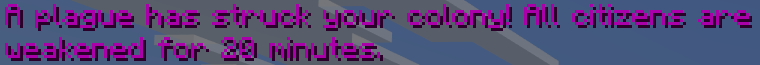
Managing Plagues
- Prevention: There's no way to prevent plagues - they occur randomly
- Duration: Plagues last exactly 20 minutes once they start
- Admin Control: Server admins can adjust plague frequency via the moderation tool
- Strategy: Avoid major combat or important tasks during plague outbreaks
Bandits
A new hostile mob that spawns in groups all around the world. Bandits are hostile towards players, citizens, knights, and other friendly entities.
Bandit Behavior
Bandits spawn in groups around the world and are hostile to multiple entity types:
- Group Spawning: Bandits spawn in groups, making them a significant threat
- Hostile to Players: Will attack players on sight
- Hostile to Citizens: Bandits will attack your colony's citizens
- Hostile to Knights: Your knights will need to defend against bandit attacks
- World Spawning: Can spawn all around the world, not just near colonies
Bandit Camp
Find their home, the bandit camp located deep in the woods. These structures serve as the bandits' base of operations.
Marauder Attacks
Marauders are very dangerous events where hostile NPCs arrive by hot-air balloon and assault your colony — first from the air, then on the ground.
What are Marauders?
Marauders are hostile NPC raiders that spawn above colonies in small groups (commonly 3–5). They arrive in hot-air balloons and may target your colony for a raid that comes in multiple waves.
Attack Waves
Marauder attacks typically happen in two distinct phases:
Wave 1 — Aerial Bombing
Marauders remain in their balloons and drop explosive bombs over the colony. Bombs damage entities but do not break blocks.
Wave 2 — Ground Assault
After bombing, the marauders land and continue the attack on the ground, engaging players and NPC citizens directly in melee combat.
Defense Strategies
- Shelter Citizens: Keep citizens sheltered inside protected structures during raids to reduce civilian casualties
- Equip Knights: Equip knights and guards with good armor and weapons — they perform well defending against the ground wave
- Iron Golems: Use Iron Golems for defense — they deal heavy damage to Marauders, but Marauders deal heavy damage back
- Admin Settings: Admins can change the frequency via the moderation tool if raids are too frequent or too rare
🚩 Totem of Peace
The Totem of Peace is a powerful new defensive item that can provide temporary protection from marauder attacks.
How to Obtain
Totems of Peace are dropped by defeated marauders during attacks. Successfully defending your colony against a marauder raid may reward you with this valuable protection item.
Protection Effect
When activated, the Totem of Peace prevents marauder attacks on your colony for 3 real-world days. This gives you time to rebuild, restock supplies, and strengthen your defenses.
Strategic Usage
- Post-Attack Recovery: Use after a devastating attack to rebuild safely
- Planned Expansion: Activate before major construction projects
- Resource Collection: Ensure safe gathering of materials outside colony walls
- Diplomatic Events: Secure peace during important negotiations with other colonies
Marauder Outposts
A new structure where marauders spawn. Explore these dangerous locations to earn trial chamber rewards and free kidnapped copper golems!
What are Marauder Outposts?
Marauder Outposts are new structures where marauders spawn. These locations present nice looting opportunities for brave adventurers.
- Marauder Spawning: Expect heavy marauder presence at these locations
- Rescue Mission: Free kidnapped copper golems held captive
Trial Chamber Rewards
Earn trial chamber rewards by clearing marauder outposts. These valuable items make the dangerous expedition worthwhile.
Server Moderation
Each colony protects a 100 block radius around each of its flags. Non-members cannot break blocks inside this area unless admins configure otherwise. Server admins use the Moderation Tool (an admin-only item) to manage colonies and tweak addon settings.
The Mod Tool Item
The mod tool is an item given to server admins that opens a powerful administration UI. Use it to quickly manage colonies, adjust global settings, and troubleshoot issues.
/tag [username] add admin
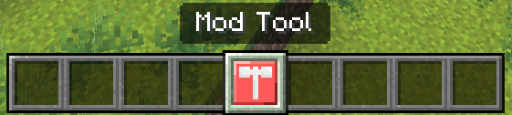
Admin Interface
The moderation tool provides access to comprehensive colony management features:
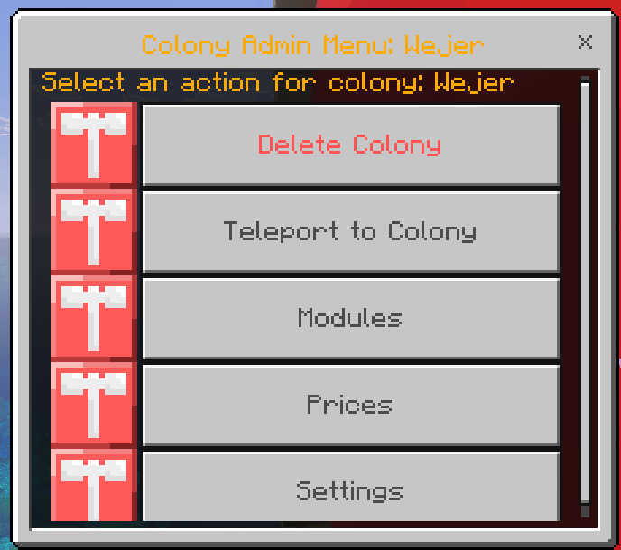
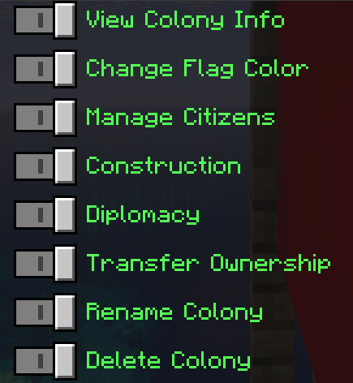
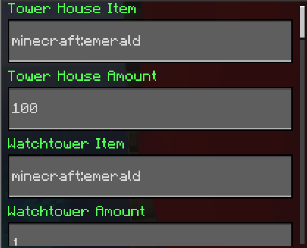
Administrative Features
- Global Settings: Tweaking addon settings and configurations
- Economy Control: Setting prices for citizens and blueprints
- Event Management: Triggering plagues, marauder attacks, and other events
- Fast Travel: Teleporting between colonies for administration
- Population Control: Setting citizen limits and managing colony size
- Colony Management: Force-deleting problematic colonies
- Protection Settings: Configuring land protection and build permissions
- Module Control: Enabling/disabling specific addon features
- Citizen Hunger Control: You can now disable citizen hunger with the mod tool
- UI Customization: You can now disable the custom UI from the world edit menu, under the resource pack settings
FAQ
Frequently Asked Questions about Jerry's Colonies. Can't find what you're looking for? Join our Discord for help!
How do I give players permissions in my colony?
Go to the mayors table, click citizen management, then click player ranks, and create a rank with the permissions you want.
How do I access the mod tool?
Run the command /tag @s add admin and then right click a colony flag.
Why can't I place a flag?
Stand DIRECTLY in front of your flag pole, face-to-pole, and try again. If it still isn't working, join the Discord for help.
Custom Structure Builder
Create your own expansion packs for Jerry's Colonies! Upload your .mcstructure files and generate a complete expansion pack that integrates seamlessly with the colony system.
Step 1: Download Jerry's Structure Editor World
To create properly sized structures (15×22×15), you must use Jerry's Structure Editor world. This is the only way to create structures that will work correctly with the colony system.
After downloading, double-click the .mcworld file to import it into Minecraft. Then create your 15×22×15 structures and export them as .mcstructure files.
Step 2: Upload Your Structures
That's the essentials — use the Mayor's Table and flags to manage and grow your civilization, and join the Discord for suggestions or support.
404 — Page not found
This page does not exist. If you followed an external link that led here, try returning to the Get Started page.